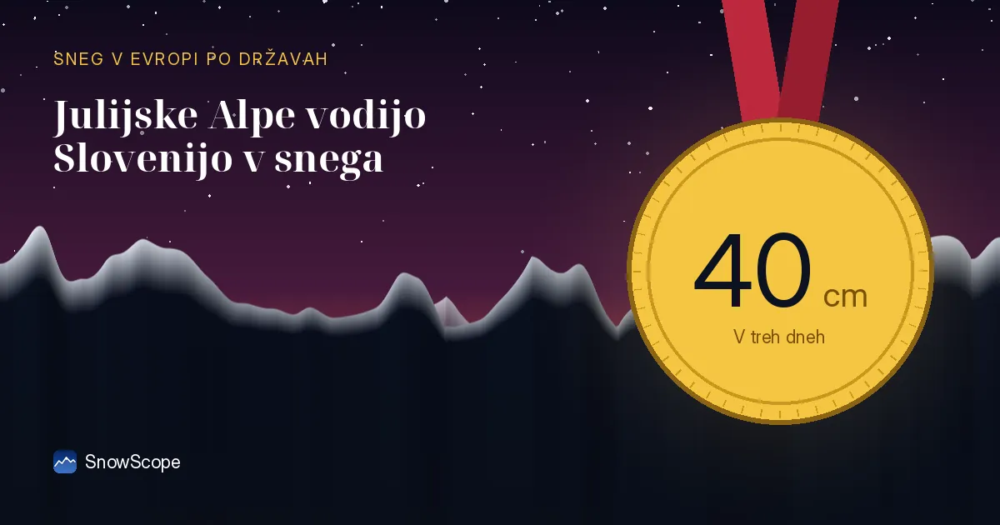
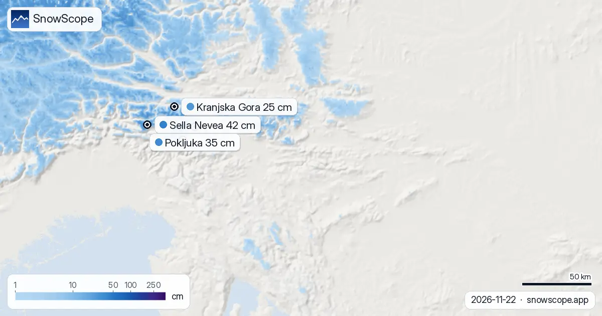

Julijske Alpe vodijo Slovenijo v snega: 40 cm v treh dneh
V zadnjih treh dneh je v Sloveniji padal sneg neenakomerno. Julijske Alpe so dobile največ snega, nižje gore in hribovja pa so ostale brez ali z malo snega.
Oglejte si snežno napoved za Sella Nevea v aplikaciji SnowScopeVišina snega, opozorila in 3D zemljevid, brezplačno.
Tri gorske verige, tri različne zgodbe
Ko gledam, kje je padal sneg, je slika jasna. Julijske Alpe na severozahodu so v zadnjih treh dneh dobile 40 cm. Kamniško-savinjske Alpe, ki se razprostirajo vzhodno od tam, so dobile 31 cm. Pohorje, ki je dalje južno in nižje, je dobilo le 12 cm. Isti vremenski sistem se je premaknil čez vse tri, a nadmorska višina je naredila razliko.
To je v jeseni v Sloveniji tipično. Vlažen zrak z juga se najprej trka ob visoke gorske verige in tam izgubi sneg. Ko doseže nižje ozemlje, ima manj snega za oddajo.
| Smučišče | Višina snega | Novi sneg, 72 h | Naslednji dnevi | Vrh |
|---|---|---|---|---|
| Sella Nevea | 42 cm | 26 cm | 25 cm | 2.137 m |
| Pokljuka | 35 cm | 31 cm | 22 cm | 1.564 m |
| Vogel | 32 cm | 33 cm | 26 cm | 1.731 m |
| Kranjska Gora | 25 cm | 18 cm | 18 cm | 1.568 m |
| Golte | 25 cm | 13 cm | 12 cm | 1.570 m |

Kje se sneg nahaja danes
Nad 1500 metri je sneg pravi: v povprečju 18 cm med 1500 in 2000 metri ter 35 cm nad 2000 metri. Obe višinski pasu sta v celoti prekrita. Pod 1500 metri se sneg hitro tanjša. Med 1000 in 1500 metri boste našli v povprečju le 2 cm, sneg pa pokriva le 60 odstotkov ozemlja. Pod 1000 metri skoraj nič ne ostane.
Snežna meja se danes nahaja približno na 1200 metrih. To pomeni, da so večina smučarskih prog v nižjih postajah brez snega ali bodo pokazale kamen skozi tanko pokrivnost. Na Sella Nevea, ki se nahaja najvišje na 2137 metrih, je globina snega 42 cm. Na Pokljuki, 1564 metra, je 35 cm. Na Kranjski Gori, le 1568 metra visoko, a s prejemanjem manjše količine svežega snega, je 25 cm.

Postaje: globina proti svežemu segu
Najgloblejši sneg je na Sella Nevea, 42 cm. Tam je tudi padlo največ svežega snega v treh dneh, 26 cm. Toda Vogel, ki se nahaja višje na 1731 metrih, je prejel 33 cm novega snega in ima zdaj 32 cm snega na tleh. Pokljuka je v treh dneh prejela 31 cm svežega snega, drugo največjo količino, in ima 35 cm snega na tleh. Te tri postaje so edine s pravzaprav uporabno globino trenutno.
Kranjska Gora in Golte se obe nahajata okoli 1570 metrih, a sta v težjih razmerah. Kranjska Gora ima 25 cm in je dobila le 18 cm novega snega. Golte je prejela 13 cm in ima 25 cm. Obe sta dosegli rob najhujšega padavanja. Od 27 smučarskih območij, ki jih spremljamo v Sloveniji, jih 16 zdaj poroča neko snežno pokrivnost, vendar večina leži nad glavnimi progami.
Kaj pride naprej
Več snega je na poti. Napoved kaže 23 cm možnega snega v naslednjih treh dneh, pri čemer je 23. november najbolj snežni dan. To ni velika količina za en dan, toda pomoč bo. V naslednjem tednu bi lahko padlo do 37 cm. V drugem tednu, od 30. novembra do 6. decembra, se pričakuje le 14 cm, zato so naslednji deset dni vaše najboljše okno za kopičenje snega.
Julijske Alpe bi naj ponovno videle največ snega naslednji teden. Če načrtujete smučanje, si zastavite roke oko 25. novembra in v prvi teden decembra. Nižje postaje bodo koristile od vsakega padavanja, toda proge nad 1500 metri bodo vedno imele najboljšo podlago.
Kako se sezona oblikuje
Pred tremi tedni je le 1110 km² slovenskega smučarskega terena imelo sneg. Včeraj je bilo 750 km². Danes je 1880 km², skok za 1130 km² v enem dnevu. Začetni sneg je krhek in pogosto neenakomeren.
V primerjavi s prejšnjimi zimami je Sella Nevea dobro pred normalnim stanjem za konec novembra. Ima 42 cm v primerjavi s tipičnimi 4 cm na ta datum, skoraj devetkrat običajno količino. Pokljuka, Vogel, Kranjska Gora in Golte so tudi nad normalnim stanjem. Toda da se sezono v celoti izgradi, potrebuje Slovenija dosledne padavine v decembru in januarju. Ti prvi tedni so važni, toda le začetek.
Branje gora
Če načrtujete smučanje izven glavnih prog v naslednjih dneh, preverite najnovejši plazovni bilten uradne slovenske službe. Svež sneg na strmih pobočjih vedno nosi tveganje, še posebej ko pada hitro. Sneg se še vedno usedlja v visokih gorah. Počakajte nekaj dni, da se stabilizira, ali se držite označenih prog, kjer se podlaga gradi.
Uporabite aplikacijo SnowScope za spremljanje globine in napovedi sprememb na vaši izbrani postaji. Gore tukaj se premikajo hitro v jeseni. V tednu bi se slika lahko ponovno spremenila.
Nasveti za smučarje
- Cilje na postaje Julijskih Alp in Kamniško-savinjskih Alp—Sella Nevea, Pokljuka in Vogel—kjer je svež sneg najglobji in novo padani sneg najdebelejši na tleh.
- Ostanite nad 1500 metri, če želite neprekinjeno snežno pokrivnost; pod to višino so proge tanke in kamen lahko prleska skozi, posebej na jugu obrnjenih pobočjih.
- Spremljajte napoved za 25. november in prvi teden decembra, ko je naslednji pomemben sneg predviden. Začetni sneg se lahko hitro skrajša v toplih obdobjih.
- Preverite uradni slovenski plazovni bilten, preden se podате v terenu izven poti. Svež sneg 30 cm ali več na strmem terenu je lahko nestabilen več dni po padacu.
- Nižje postaje, kot sta Kranjska Gora in Golte, se bodo izboljšale, ko bo padlo več snega, toda ostajajo drugo izbiro do konca novembra in dokler december ne položi globljo podlago.
About these numbers
Resort snow depths are the deepest snow on the resort's upper slopes on the date shown; they are estimates for an area, not a measurement at one point. Forecasts can change. Always read the official avalanche bulletin before going off-piste.
Cite this report
For research, teaching or the press: the numbers and charts are free to reuse under CC BY 4.0 with this citation.
SnowScope (2026), Julijske Alpe vodijo Slovenijo v snega: 40 cm v treh dneh, https://snowscope.app/blog/sl/2026/11/slovenia-where-the-snow-fell-22-november-2026.html, accessed 2026-11-22
SnowScope (Atlas Labs). (2026, November 22). Julijske Alpe vodijo Slovenijo v snega: 40 cm v treh dneh. SnowScope snow reports. https://snowscope.app/blog/sl/2026/11/slovenia-where-the-snow-fell-22-november-2026.html
BibTeX
@misc{snowscope2026sloveniawherethesnowfell,
author = {{SnowScope (Atlas Labs)}},
title = {Julijske Alpe vodijo Slovenijo v snega: 40 cm v treh dneh},
year = {2026},
month = nov,
howpublished = {\url{https://snowscope.app/blog/sl/2026/11/slovenia-where-the-snow-fell-22-november-2026.html}},
note = {Published 2026-11-22 12:52 UTC; accessed 2026-11-22}
}· CC BY 4.0 · Methods, data and tools →
Sella Nevea: snow and temperature by height, this winter vs last (tools) →
Follow Sella Nevea
Brezplačno: sporočilo, ko prihaja novi sneg, in napoved vsako jutro.